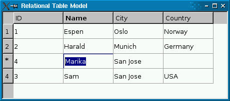

Presenting Data in a Table View
The QSqlQueryModel, QSqlTableModel, and QSqlRelationalTableModel classes can be used as a data source for Qt's view classes such as QListView, QTableView, and QTreeView. In practice, QTableView is by far the most common choice, because an SQL result set is essentially a two-dimensional data structure.

The following example creates a view based on an SQL data model:
QTableView *view = new QTableView;
view->setModel(model);
view->show();
If the model is a read-write model (e.g., QSqlTableModel), the view lets the user edit the fields. You can disable this by calling
view->setEditTriggers(QAbstractItemView::NoEditTriggers);
You can use the same model as a data source for multiple views. If the user edits the model through one of the views, the other views will reflect the changes immediately. The Table Model example shows how it works.
View classes display a header at the top to label the columns. To change the header texts, call setHeaderData() on the model. The header's labels default to the table's field names. For example:
model->setHeaderData(0, Qt::Horizontal, QObject::tr("ID"));
model->setHeaderData(1, Qt::Horizontal, QObject::tr("Name"));
model->setHeaderData(2, Qt::Horizontal, QObject::tr("City"));
model->setHeaderData(3, Qt::Horizontal, QObject::tr("Country"));
QTableView also has a vertical header on the left with numbers identifying the rows. If you insert rows programmatically using QSqlTableModel::insertRows(), the new rows will be marked with an asterisk (*) until they are submitted using submitAll() or automatically when the user moves to another record (assuming the edit strategy is QSqlTableModel::OnRowChange).

Likewise, if you remove rows using removeRows(), the rows will be marked with an exclamation mark (!) until the change is submitted.
The items in the view are rendered using a delegate. The default delegate, QItemDelegate, handles the most common data types (int, QString, QImage, etc.). The delegate is also responsible for providing editor widgets (e.g., a combobox) when the user starts editing an item in the view. You can create your own delegates by subclassing QAbstractItemDelegate or QItemDelegate. See Model/View Programming for more information.
QSqlTableModel is optimized to operate on a single table at a time. If you need a read-write model that operates on an arbitrary result set, you can subclass QSqlQueryModel and reimplement flags() and setData() to make it read-write. The following two functions make fields 1 and 2 of a query model editable:
Qt::ItemFlags EditableSqlModel::flags( const QModelIndex &index) const { Qt::ItemFlags flags = QSqlQueryModel::flags(index); if (index.column() == 1 || index.column() == 2) flags |= Qt::ItemIsEditable; return flags; } bool EditableSqlModel::setData(const QModelIndex &index, const QVariant &value, int /* role */) { if (index.column() < 1 || index.column() > 2) return false; QModelIndex primaryKeyIndex = QSqlQueryModel::index(index.row(), 0); int id = data(primaryKeyIndex).toInt(); clear(); bool ok; if (index.column() == 1) { ok = setFirstName(id, value.toString()); } else { ok = setLastName(id, value.toString()); } refresh(); return ok; }
The setFirstName() helper function is defined as follows:
bool EditableSqlModel::setFirstName(int personId, const QString &firstName) { QSqlQuery query; query.prepare("update person set firstname = ? where id = ?"); query.addBindValue(firstName); query.addBindValue(personId); return query.exec(); }
The setLastName() function is similar. See the Query Model example for the complete source code.
Subclassing a model makes it possible to customize it in many ways: You can provide tooltips for the items, change the background color, provide calculated values, provide different values for viewing and editing, handle null values specially, and more. See Model/View Programming as well as the QAbstractItemView reference documentation for details.
If all you need is to resolve a foreign key to a more human-friendly string, you can use QSqlRelationalTableModel. For best results, you should also use QSqlRelationalDelegate, a delegate that provides combobox editors for editing foreign keys.
The Relational Table Model example illustrates how to use QSqlRelationalTableModel in conjunction with QSqlRelationalDelegate to provide tables with foreign key support.